Every routable surface in the host, crossed against every principal that can reach it, in every environment — derived from .RequireAuthorization() / .AllowAnonymous() metadata and environment guards in source, not from policy documents.
There is exactly one rule: you are signed in, or you are not. Every API route requires a session unless it explicitly says otherwise, and nothing anywhere checks a role, a scope or an owner.
Signing in accepts any Microsoft account. In Development you can also click "Continue as Guest", and tests authenticate with a header — both paths are removed in Production, and the header handler throws if it is ever constructed there.
The one endpoint that stays open everywhere is the callback the browser's WebGPU worker uses to hand back its finished output, because that worker has no credential to send.

DOCS/diagrams/authz_t1.mmd| Principal | How it authenticates | Claims it carries | Exists in |
|---|---|---|---|
| Anonymous | nothing | none | Dev · Test · Prod |
| Microsoft user | OIDC code flow + PKCE against login.microsoftonline.com/common/v2.0; session stored in the PoLocalCompare.Session cookie | preferred_username, profile, email | Dev · Prod (Test: not exercised) |
| Guest | GET /auth/login/fake mints a cookie for GUEST######## | name, preferred_username, role=Guest | Dev only — route is mapped inside if (!IsProduction()) |
| Test client | X-Fake-User (+ optional X-Fake-Roles) via FakeAuthHandler | name, preferred_username, roles as sent | Dev · Test — the handler's constructor throws in Production |
| Browser worker | none — it is a Web Worker posting a result | none | Dev · Test · Prod |
| Server-internal | n/a — AutoJudge, ModelSeeder, BackgroundTaskService never traverse HTTP | none | all — bypasses the pipeline entirely |
| Environment | Fake scheme | /auth/login/fake | Features:AllowAnonymousWrites | Dev-only endpoints | Ollama models visible |
|---|---|---|---|---|---|
| Development | registered | mapped | true — from appsettings.Development.json | mapped | yes |
| Test Integration + E2E-API hosts | registered | mapped | true — inherited; the fixtures never override it | mapped | yes |
| Production | not registered | not mapped | false — default | not mapped | filtered out |
Test hosts call builder.UseEnvironment("Development"), so "Test" is Development with overrides (Features:UseRealAi=false, AiJudge:Enabled=false, Testing:SkipSeeding=true, Testcontainers Azurite connection strings, empty KeyVault:Uri). Authorization behaviour is identical to Development.
options.FallbackPolicy = options.DefaultPolicy makes every endpoint require an authenticated user by construction. Auditing therefore reduces to auditing the opt-outs — there is no way to add an unprotected endpoint by forgetting something.POST /api/duels/{duelId}/local-result is .AllowAnonymous() unconditionally. Anyone who knows a duel id can submit that side's HTML output while the duel is still running.POST /api/dev/reset wipes Duels, DuelResults and EloHistory and resets every model to 1200 ELO. The IsDevelopment() mapping guard is the only thing protecting it — and a developer's localhost writes to whatever storage account is configured.Guest role is issued and X-Fake-Roles is honoured; /auth/me returns them. No RequireRole, no named policy, no [Authorize(Roles=…)] exists anywhere. Likewise Duel.OwnerId and Duel.VerdictBy are recorded but never compared — any signed-in user can judge any duel.
DOCS/diagrams/authz_t2.mmd| Endpoint | Guard in code | Development | Test | Production | |||||||||
|---|---|---|---|---|---|---|---|---|---|---|---|---|---|
| Anon | Guest | MS | Test | Anon | Guest | MS | Test | Anon | Guest | MS | Test | ||
| GET /health | .AllowAnonymous() | ✔ | ✔ | ✔ | ✔ | ✔ | ✔ | ✔ | ✔ | ✔ | – | ✔ | – |
| GET /api/diag/smoke | .AllowAnonymous() | ✔ | ✔ | ✔ | ✔ | ✔ | ✔ | ✔ | ✔ | ✔ | – | ✔ | – |
| GET /diag (Razor page) | MapRazorPages().AllowAnonymous() | ✔ | ✔ | ✔ | ✔ | ✔ | ✔ | ✔ | ✔ | ✔ | – | ✔ | – |
| GET /auth/me | .AllowAnonymous() | ✔ | ✔ | ✔ | ✔ | ✔ | ✔ | ✔ | ✔ | ✔ | – | ✔ | – |
| GET /auth/login | .AllowAnonymous() | ✔ | ✔ | ✔ | ✔ | ✔ | ✔ | ✔ | ✔ | ✔ | – | ✔ | – |
| GET /auth/login/microsoft | .AllowAnonymous() | ✔ | ✔ | ✔ | ✔ | ✔ | ✔ | ✔ | ✔ | ✔ | – | ✔ | – |
| GET /auth/login/fake | .AllowAnonymous() inside if (!IsProduction()) |
✔ | ✔ | ✔ | ✔ | ✔ | ✔ | ✔ | ✔ | – not mapped | – | – not mapped | – |
| POST /auth/logout | .AllowAnonymous() | ✔ | ✔ | ✔ | ✔ | ✔ | ✔ | ✔ | ✔ | ✔ | – | ✔ | – |
| POST /api/duels/{id}/local-result | .AllowAnonymous() — unconditional | ✔ | ✔ | ✔ | ✔ | ✔ | ✔ | ✔ | ✔ | ✔ | – | ✔ | – |
| GET /api/models/download-status/{id} | .AllowAnonymous() | ✔ | ✔ | ✔ | ✔ | ✔ | ✔ | ✔ | ✔ | ✔ | – | ✔ | – |
| Static assets · /favicon.ico · SPA fallback | .AllowAnonymous() + served before UseAuthentication | ✔ | ✔ | ✔ | ✔ | ✔ | ✔ | ✔ | ✔ | ✔ | – | ✔ | – |
| GET /openapi · /scalar | .AllowAnonymous() inside if (IsDevelopment()) |
✔ | ✔ | ✔ | ✔ | ✔ | ✔ | ✔ | ✔ | – not mapped | – | – not mapped | – |
| POST /api/dev/reset destructive | .AllowAnonymous() inside if (IsDevelopment()) |
✔ | ✔ | ✔ | ✔ | ✔ | ✔ | ✔ | ✔ | – not mapped | – | – not mapped | – |
| POST /api/dev/remap-model-ids | .AllowAnonymous() inside if (IsDevelopment()) |
✔ | ✔ | ✔ | ✔ | ✔ | ✔ | ✔ | ✔ | – not mapped | – | – not mapped | – |
| POST /api/duels | group .RequireAuthorization(); .AllowAnonymous() when Features:AllowAnonymousWrites |
⚑ open | ✔ | ✔ | ✔ | ⚑ open | ✔ | ✔ | ✔ | ✘ | – | ✔ | – |
| POST /api/duels/{id}/verdict | group .RequireAuthorization(); .AllowAnonymous() when Features:AllowAnonymousWrites |
⚑ open | ✔ | ✔ | ✔ | ⚑ open | ✔ | ✔ | ✔ | ✘ | – | ✔ | – |
| GET /api/duels | group .RequireAuthorization() | ✘ | ✔ | ✔ | ✔ | ✘ | ✔ | ✔ | ✔ | ✘ | – | ✔ | – |
| GET /api/duels/{id} | group .RequireAuthorization() | ✘ | ✔ | ✔ | ✔ | ✘ | ✔ | ✔ | ✔ | ✘ | – | ✔ | – |
| GET /api/duels/demo-plan | group .RequireAuthorization() | ✘ | ✔ | ✔ | ✔ | ✘ | ✔ | ✔ | ✔ | ✘ | – | ✔ | – |
| GET /api/duels/{id}/report | .RequireAuthorization() on the route | ✘ | ✔ | ✔ | ✔ | ✘ | ✔ | ✔ | ✔ | ✘ | – | ✔ | – |
| GET /api/models | group .RequireAuthorization() | ✘ | ✔ | ✔ | ✔ | ✘ | ✔ | ✔ | ✔ | ✘ | – | ✔ | – |
| GET /api/models/availability | group .RequireAuthorization() | ✘ | ✔ | ✔ | ✔ | ✘ | ✔ | ✔ | ✔ | ✘ | – | ✔ | – |
| POST /api/models catalog write | group .RequireAuthorization() | ✘ | ✔ | ✔ | ✔ | ✘ | ✔ | ✔ | ✔ | ✘ | – | ✔ | – |
| DELETE /api/models/{id} catalog write | group .RequireAuthorization() | ✘ | ✔ | ✔ | ✔ | ✘ | ✔ | ✔ | ✔ | ✘ | – | ✔ | – |
| POST /api/models/{id}/download | group .RequireAuthorization() | ✘ | ✔ | ✔ | ✔ | ✘ | ✔ | ✔ | ✔ | ✘ | – | ✔ | – |
| GET /api/leaderboard | group .RequireAuthorization() | ✘ | ✔ | ✔ | ✔ | ✘ | ✔ | ✔ | ✔ | ✘ | – | ✔ | – |
| GET /api/leaderboard/{id}/killlist | group .RequireAuthorization() | ✘ | ✔ | ✔ | ✔ | ✘ | ✔ | ✔ | ✔ | ✘ | – | ✔ | – |
| GET /api/ollama/gpu-status | group .RequireAuthorization() | ✘ | ✔ | ✔ | ✔ | ✘ | ✔ | ✔ | ✔ | ✘ | – | ✔ | – |
| GET /api/ollama/available-models | group .RequireAuthorization() | ✘ | ✔ | ✔ | ✔ | ✘ | ✔ | ✔ | ✔ | ✘ | – | ✔ | – |
| POST /api/ollama/benchmark | group .RequireAuthorization() | ✘ | ✔ | ✔ | ✔ | ✘ | ✔ | ✔ | ✔ | ✘ | – | ✔ | – |
| WS /hubs/duel — JoinDuel · JoinLobby | MapHub<DuelHub>().RequireAuthorization() | ✘ | ✔ | ✔ | ✔ | ✘ | ✔ | ✔ | ✔ | ✘ | – | ✔ | – |
Production columns for Guest and Test are structurally empty: /auth/login/fake is not mapped and FakeAuthHandler is not registered there, so neither principal can come into existence. Tick "Collapse unused columns" to drop them.
| # | Endpoint | Environments | Exposure | Existing mitigation | Severity |
|---|---|---|---|---|---|
| 1 | POST /api/duels/{duelId}/local-result | All, including Production | Writes a DuelResult row for an arbitrary (duelId, modelId) pair with attacker-chosen HTML, token count and timings. If it lands before the real browser worker's post, the polling loop in WaitForLocalModelResultAsync returns the forged row and the duel proceeds on it — which the auto-judge may then rate. |
Duel ids are ULIDs (unguessable in practice); the row is only consumed while a duel is actively running; output is normalized; nothing moves ELO without a verdict; the endpoint takes no OwnerId, so it cannot escalate identity. |
Medium |
| 2 | POST /api/dev/reset | Development · Test | Deletes every entity in Duels, DuelResults and EloHistory, then rewrites every model to 1200 ELO / zero counts. No body, no auth, no confirmation. |
Mapped only inside if (app.Environment.IsDevelopment()). |
High (dev) |
| 3 | POST /api/duels | Development · Test | Anonymous callers can start real duels — which spend real Azure AI Foundry tokens and write real rows. | Features:AllowAnonymousWrites defaults to false; only appsettings.Development.json turns it on. Read once at startup. |
Medium (dev) |
| 4 | POST /api/duels/{id}/verdict | Development · Test | Anonymous callers can decide duels and move ELO. | Same flag; first write wins and a second throws 409, so a verdict cannot be overwritten. | Medium (dev) |
| 5 | GET /diag | All | Anonymous configuration inspection. | Secret values are masked by the page; it is also unlinked from all navigation by policy. | Low |
| 6 | GET /api/models/download-status/{id} | All | Anonymous filesystem-presence probe under wwwroot/models/. The route value is joined into a path. |
Returns only a boolean and a server path string; Directory.Exists + a fixed filename lookup, no file content is served. Path traversal would reveal at most whether a directory containing mlc-chat-config.json exists. |
Low |
| 7 | Ownership checks — absent everywhere | All | Duel.OwnerId and Duel.VerdictBy are stamped from preferred_username but never compared. Any authenticated user can read, judge, export or retry any other user's duel. |
Documented as forensic-only by design; the app's stated audience is one operator plus invited guests. | By design |
| 8 | Role checks — absent everywhere | All | No RequireRole, no named policy, no [Authorize(Roles=…)]. A Guest has identical rights to the owner, including catalog writes and model deletion. |
None. Authorization is binary by design. | Design gap |
FallbackPolicy means a new endpoint is protected by omission, not by remembering.FakeAuthHandler throws in its constructor if the environment is Production — misconfiguration fails loudly at startup rather than opening a door.HttpOnly + SameSite=Strict + SecurePolicy=Always, 8-hour sliding. The WASM client never holds a token.OnRedirectToLogin is rewritten to a bare 401, so an API caller never receives an HTML login page.returnUrl is sanitised to local relative paths only — //evil.com is rejected, closing the open-redirect.IHubContext, so no authenticated client can inject into another duel's feed.^https://login.microsoftonline.com/{guid}/v2.0$, or an explicit tenant allow-list when AzureAd:AllowedTenants is populated._Imports.razor applies @attribute [Authorize] to every routed page and App.razor renders Login.razor for the unauthenticated. This is a UX affordance only — it runs in the user's browser. BffAuthenticationStateProvider reads GET /auth/me, and the server remains the sole authority.
The client also hides the guest button outside non-Production, mirroring the server's !IsProduction() gate on /auth/login/fake. Both gates exist; only the server one matters.

DOCS/diagrams/authz.mmd